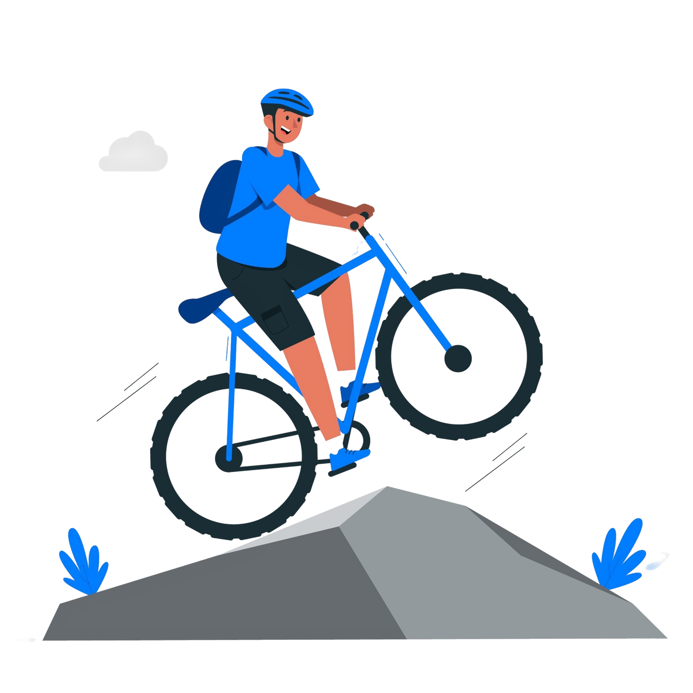
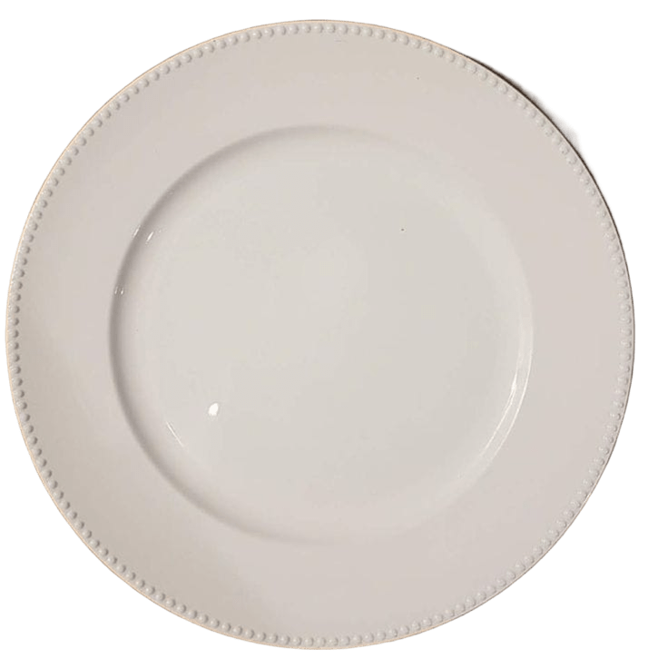

Pembelajaran 1: Pengenalan Lingkaran
Tujuan Pembelajaran
- Peserta didik dapat memahami konsep lingkaran
- Peserta didik mengidentifikasi unsur-unsur lingkaran
- Peserta didik menjelaskan perbedaan antar unsur lingkaran
Pendahuluan


Sekarang, yuk kita amati salah satu dari benda tersebut — misalnya roda sepeda!
Perhatikan gambar roda sepeda di samping
Bentuknya bulat sempurna, bukan? Nah, bentuk bulat itu dalam matematika disebut lingkaran.
Lihat bagian tengah roda — tempat semua jeruji bertemu. Titik itu disebut titik pusat. Sekarang perhatikan jeruji-jeruji yang menyebar dari pusat ke pinggir roda. Semua jeruji itu panjangnya sama.
Jadi dari roda sepeda kita bisa belajar, bahwa:
- Lingkaran adalah kumpulan titik-titik yang letaknya sama jauh dari titik pusat.
- Jari-jari adalah garis dari titik pusat ke tepi lingkaran.
Jadi, Apa itu lingkaran?
Lingkaran adalah kumpulan titik-titik di suatu bidang datar yang berjarak sama dari satu titik tetap di tengahnya. Titik tetap itu disebut pusat lingkaran, dan jarak dari pusat ke titik mana pun di tepi lingkaran disebut jari-jari. Bayangkan kamu menancapkan ujung pena di satu titik, lalu memutar tali yang diikatkan pada pena dengan panjang tetap. Titik-titik yang kamu lewati saat memutar itulah yang membentuk lingkaran!
Putar Pena Membentuk Lingkaran
Geser pena di bawah ini dan lihatlah, Bahwa apapun posisi titiknya, jaraknya ke pusat akan selalu sama.
Nama lingkaran biasanya sesuai dengan nama titik pusatnya. Pada gambar di samping contoh bentuk lingkaran dengan pusat titik P, bisa disebut lingkaran P. Jarak yang tetap antara titik pada lingkaran dengan pusat lingkaran dinamakan jari jari, biasanya disimbolkan r.
Titik pusat: Titik di tengah lingkaran tempat semua titik lainnya berjarak sama.
Jarak tetap dari titik pusat ke tepi lingkaran disebut jari-jari (radius).
Unsur-unsur Lingkaran
setelah kita memahami konsep lingkaran, selanjutnya kita perlu mengenal bagian-bagian yang ada dalam lingkaran. Bagian-bagian ini disebut sebagai unsur-unsur lingkaran. Mari kita pelajari satu per satu.
- Titik pusat: Titik pusat adalah titik yang berada di tengah lingkaran dan memiliki jarak yang sama ke seluruh tepi lingkaran. Semua jari-jari berawal dari titik ini. Contohnya seperti poros pada jam dinding. Semua jarum berputar dari titik ini.
- Jari-jari: Jari-jari adalah garis dari titik pusat lingkaran ke tepinya. misalnya Pada jam dinding, jarum jam bisa dianggap sebagai jari-jari, karena memanjang dari pusat ke angka di tepi.
Klik dan seret jarum jam untuk memutarnya
12369Titik merah = titik pusat jam = titik pusat
Garis biru = jarum jam = jari-jari - Diameter: Diameter adalah garis lurus dari satu sisi lingkaran ke sisi lainnya yang melewati titik pusat. Misalnya Pada pizza, diameter adalah irisan penuh dari ujung ke ujung yang membelah pizza menjadi dua bagian sama besar.
Rumus: diameter = 2 × jari-jari atau d = 2r - Busur: Busur adalah bagian dari keliling lingkaran yang membentuk garis lengkung antara dua titik di tepinya. Busur terbagi menjadi dua jenis, yaitu busur mayor dan busur minor. Busur yang panjang disebut busur mayor (lebih dari setengah lingkaran). Busur yang pendek disebut busur minor (kurang dari setengah lingkaran).
- Tali busur: Tali busur adalah garis lurus yang menghubungkan dua titik pada keliling lingkaran, namun tidak harus melalui titik pusat. Jadi, bisa dibilang tali busur mirip seperti diameter, tetapi tidak selalu membelah lingkaran menjadi dua bagian yang sama besar.
- Juring: Juring adalah bagian dari lingkaran yang dibatasi oleh dua jari-jari dan busur. Bentuknya mirip seperti potongan kue tart atau irisan pizza. Kalau kamu menarik dua jari-jari dari titik pusat ke dua titik di tepi lingkaran, dan menghubungkannya dengan bagian lengkung (busur), kamu akan mendapatkan satu juring.
- Tembereng: Tembereng adalah bagian dari lingkaran yang dibatasi oleh sebuah tali busur dan busur. Berbeda dengan juring yang dibatasi dua jari-jari dan satu busur, tembereng tidak harus melibatkan titik pusat.
- Apotema: Apotema adalah garis tegak lurus yang ditarik dari titik pusat lingkaran ke tengah-tengah sebuah tali busur. Garis ini selalu membentuk sudut siku-siku (90°) dengan tali busur.